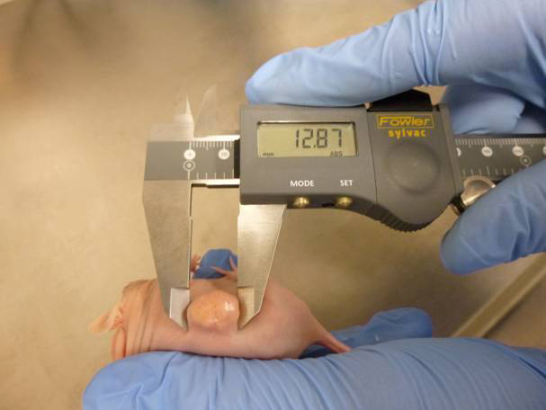

| Here's how to make your animal studies go smoother. |
| Take the drudgery out of animal xenograft studies with LABCAT software. Our free demo will show you how. |
|  |
|
Fast. Accurate. Easy.
LABCAT is used by pharmacologists, toxicologists, pathologists, and oncologists worldwide to streamline animal studies with data that's more accurate and comprehensive. Click HERE to learn more. Make your tumor tracking faster and more accurate with LABCAT. With LABCAT, your data is accurately collected and managed to your protocol-driven parameters, user-defined dictionaries and tasks. |
|
|